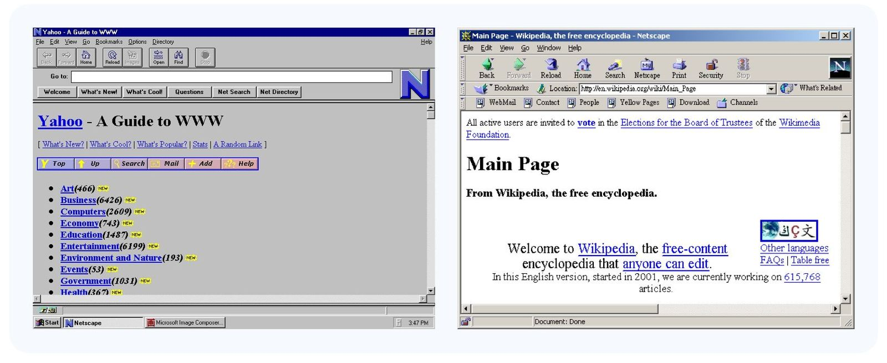
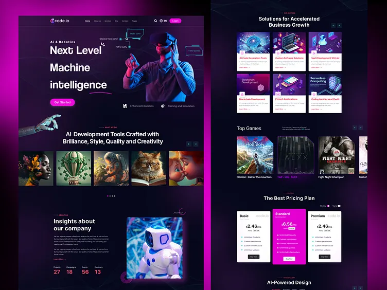

История Интернета
Прокрути или свайпни, чтобы узнать, как развивался интернет

ARPANET (1969)
Первая компьютерная сеть, которая стала основой для будущего интернета.

Развитие сетей (1970-1980)
Появление TCP/IP и расширение сетевой инфраструктуры.

WWW (1990-е)
Появление Всемирной паутины и первых браузеров.

Web 2.0 (2000-е)
Социальные сети, интерактивные сайты, пользовательский контент.
Мобильный интернет (2010-е)
Широкое распространение смартфонов и мобильного доступа в интернет.

Современный интернет (2020-е)
Облачные сервисы, быстрый интернет, IoT и глобальная интеграция.